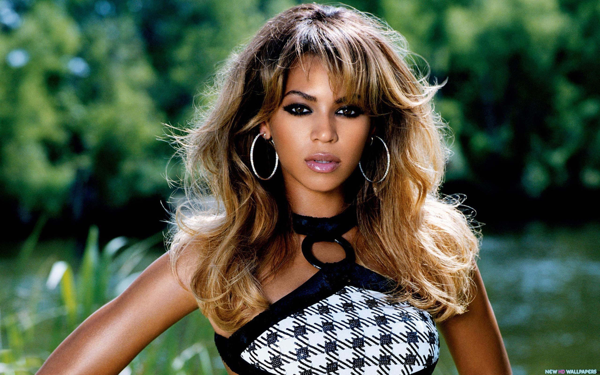

Beyoncé - A História
Início da Carreira
Beyoncé começou sua carreira no grupo Destiny's Child nos anos 90, onde ganhou reconhecimento internacional. Após a dissolução do grupo, ela seguiu uma carreira solo de sucesso.
Sucesso e Reconhecimento
Beyoncé é uma das artistas mais premiadas da história, com álbuns como "Dangerously in Love" e "Lemonade" recebendo aclamação crítica e comercial. Ela também é conhecida por suas performances icônicas, como o Super Bowl Halftime Show de 2013.
Projetos Recentes
Nos últimos anos, Beyoncé lançou álbuns inovadores como "Lemonade" e "The Lion King: The Gift", este último inspirado no filme "O Rei Leão". Ela também é conhecida por suas colaborações com outros artistas e suas turnês mundiais esgotadas.

Impacto e Legado
Beyoncé é muito mais do que uma artista de sucesso; ela é uma figura cultural influente. Seu ativismo social, feminismo e representação da cultura afro-americana a tornaram uma inspiração para milhões em todo o mundo. Seu legado transcende a música, impactando a sociedade em diversos níveis.
Albuns - A História
Dangerously in Love
rreira no grupo Destiny's Child nos anos 90, onde ganhou reconhecimento internacional. Após a dissolução do grupo, ela seguiu uma carreira solo de sucesso.
B'Day
Beyoncé é uma das artistas mais premiadas da história, com álbuns como "Dangerously in Love" e "Lemonade" recebendo aclamação crítica e comercial. Ela também é conhecida por suas performances icônicas, como o Super Bowl Halftime Show de 2013.
I Am... Sasha Fierce
Nos últimos anos, Beyoncé lançou álbuns inovadores como "Lemonade" e "The Lion King: The Gift", este último inspirado no filme "O Rei Leão". Ela também é conhecida por suas colaborações com outros artistas e suas turnês mundiais esgotadas.
4
Beyoncé é muito mais do que uma artista de sucesso; ela é uma figura cultural influente. Seu ativismo social, feminismo e representação da cultura afro-americana a tornaram uma inspiração para milhões em todo o mundo. Seu legado transcende a música, impactando a sociedade em diversos níveis.
Beyoncé
rreira no grupo Destiny's Child nos anos 90, onde ganhou reconhecimento internacional. Após a dissolução do grupo, ela seguiu uma carreira solo de sucesso.
Lemonade
Beyoncé é uma das artistas mais premiadas da história, com álbuns como "Dangerously in Love" e "Lemonade" recebendo aclamação crítica e comercial. Ela também é conhecida por suas performances icônicas, como o Super Bowl Halftime Show de 2013.
The Gift
Nos últimos anos, Beyoncé lançou álbuns inovadores como "Lemonade" e "The Lion King: The Gift", este último inspirado no filme "O Rei Leão". Ela também é conhecida por suas colaborações com outros artistas e suas turnês mundiais esgotadas.

Renaissance - ACT III
Beyoncé é muito mais do que uma artista de sucesso; ela é uma figura cultural influente. Seu ativismo social, feminismo e representação da cultura afro-americana a tornaram uma inspiração para milhões em todo o mundo. Seu legado transcende a música, impactando a sociedade em diversos níveis.
Cowboy Carter - ACT II
rreira no grupo Destiny's Child nos anos 90, onde ganhou reconhecimento internacional. Após a dissolução do grupo, ela seguiu uma carreira solo de sucesso.
? - ACT III
Beyoncé é uma das artistas mais premiadas da história, com álbuns como "Dangerously in Love" e "Lemonade" recebendo aclamação crítica e comercial. Ela também é conhecida por suas performances icônicas, como o Super Bowl Halftime Show de 2013.